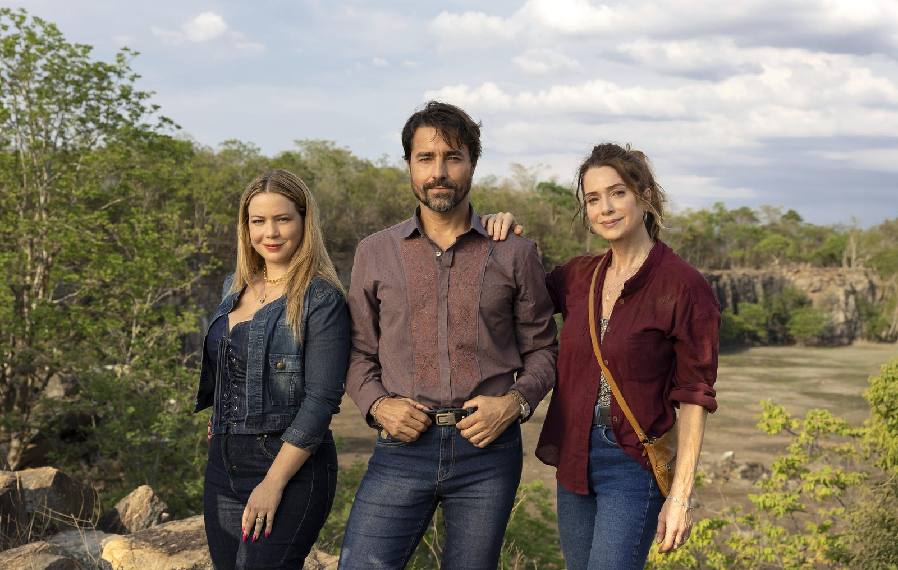
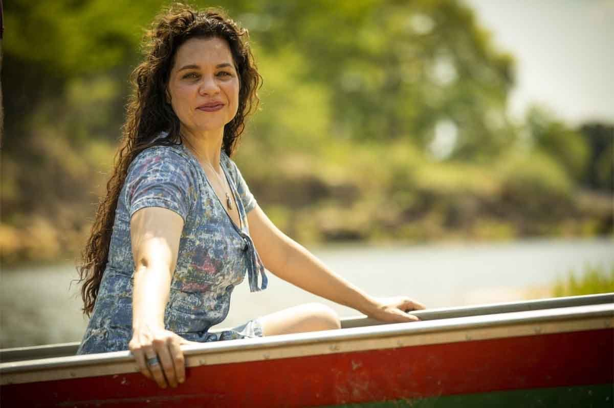
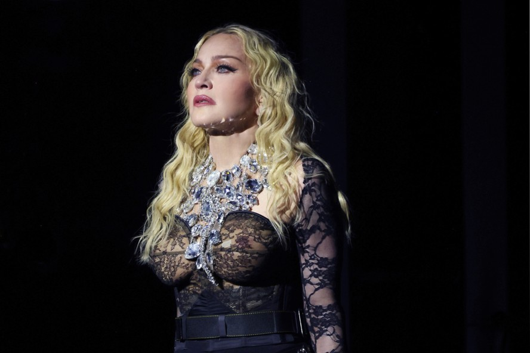

📋 Seleção do Dia
As notícias mais quentes do entretenimento brasileiro · 15 de junho de 2026 · Ir para BuzzPop
14 matérias na seleção de hoje
Crédito: Foto: Zé Felipe compartilhou registro dos filhos na casa de Vini Jr., datada de dezembro de 2025 (Reprodução: Instagram/@zefelipe)
As crianças visitaram a residência após atraso na mudança e reação foi registrada por Poliana Rocha.
Os filhos de Virginia Fonseca e Zé Felipe conheceram a nova mansão do cantor, localizada em um condomínio de luxo em Goiás. A visita aconteceu após um atraso na mudança para o imóvel, que tem sido bastante comentado nas redes sociais.
A reação das crianças foi registrada pela avó, Poliana Rocha, que compartilhou momentos da visita. Nas imagens, os pequenos aparecem explorando os cômodos da casa, que conta com área de lazer ampla, piscina e espaços exclusivos para as crianças.
A nova residência do casal tem gerado repercussão entre os fãs, que acompanham cada etapa da mudança. Virginia e Zé Felipe devem se mudar definitivamente nos próximos dias, após a conclusão dos ajustes finais na propriedade.
ID de aprovação: RmlsaG9zIGRlIFZpcmdp
Fontes: CNN Brasil / Globo / RedeTV! / R7 Entretenimento / Alô Alô Bahia
Link principal: CNN Brasil
Crédito da imagem: Foto: Zé Felipe compartilhou registro dos filhos na casa de Vini Jr., datada de dezembro de 2025 (Reprodução: Instagram/@zefelipe)
Origem da imagem: Nenhuma candidata foi aprovada pela revisao visual automatica.

Crédito: Imagem ilustrativa: itaberabanoticias.com.br
Filme de Steven Spielberg sobre alienígenas estreia nos cinemas de Boa Vista e arrecada US$ 93 milhões globalmente.
O filme 'Dia D', dirigido por Steven Spielberg, arrecadou US$ 93 milhões na estreia global, superando as expectativas iniciais da indústria. O longa, que conta a história de uma invasão alienígena, estreou simultaneamente em diversos países neste fim de semana.
O valor coloca o filme perto da marca dos US$ 100 milhões, um dos maiores lançamentos do ano. A recepção do público tem sido positiva, com salas lotadas em várias cidades brasileiras, incluindo cinemas de Boa Vista, onde a estreia registrou grande procura.
Com orçamento estimado em mais de US$ 150 milhões, 'Dia D' precisava de uma estreia forte para justificar o investimento. Analistas de bilheteria acreditam que o filme pode ultrapassar a marca do meio bilhão de dólares se mantiver o ritmo nas próximas semanas.
ID de aprovação: RGlhIEQgfCBGaWxtZSBz
Fontes: Omelete / G1 / VEJA / TecMundo / cinepop.com.br
Link principal: Omelete
Crédito da imagem: Imagem ilustrativa: itaberabanoticias.com.br
Origem da imagem: Nenhuma candidata foi aprovada pela revisao visual automatica.

Crédito: Imagem ilustrativa: itaberabanoticias.com.br
Filme de alienígenas de Steven Spielberg supera expectativas e fica perto dos 100 milhões de dólares na estreia.
O mais recente trabalho de Steven Spielberg nos cinemas, 'Dia D', alcançou a marca de US$ 93 milhões em sua estreia global, se aproximando dos US$ 100 milhões. O longa-metragem de ficção científica acompanha a chegada de alienígenas à Terra em meio a um cenário de tensão mundial.
A produção tem chamado a atenção não apenas pela direção de Spielberg, mas também pelos efeitos visuais e pela trilha sonora. Críticos apontam o filme como uma volta do diretor ao gênero que o consagrou, lembrando clássicos como 'Contatos Imediatos do Terceiro Grau'.
O público brasileiro abraçou a estreia, com sessões esgotadas em diversas capitais. A expectativa é que o filme continue forte nas bilheterias nas próximas semanas, impulsionado pelo boca a boca positivo nas redes sociais.
ID de aprovação: UXVhbmRvIERpYSBEIHNl
Fontes: TecMundo / Omelete / G1 / VEJA / cinepop.com.br
Link principal: TecMundo
Crédito da imagem: Imagem ilustrativa: itaberabanoticias.com.br
Origem da imagem: Nenhuma candidata foi aprovada pela revisao visual automatica.
Crédito: Foto: Vovô Anésio, influenciador de 88 anos, deixa UTI após acidente e cirurgia — Foto: Reprodução/Instagram
Anézio Fiori, conhecido como Vovô Anésio, morre aos 88 anos no interior de São Paulo, gerando comoção nas redes sociais.
Anésio Fiori, conhecido como Vovô Anésio, morreu aos 88 anos no interior de São Paulo. O influenciador ganhou fama nacional com vídeos de humor e sabedoria popular que conquistaram milhões de seguidores nas redes sociais.
A notícia da morte foi confirmada por familiares, que não divulgaram a causa. Vovô Anésio construiu uma legião de fãs com seu jeito simples e bem-humorado, publicando conteúdo que mesclava conselhos de vida e histórias engraçadas do dia a dia.
Personalidades das redes sociais prestaram homenagens ao influenciador, destacando seu carisma e autenticidade. O velório será aberto ao público, permitindo que os fãs possam se despedir pessoalmente do criador de conteúdo.
ID de aprovação: TW9ycmUgYW9zIDg4IGFu
Fontes: UOL / G1 / VEJA / CNN Brasil / R7
Link principal: UOL
Crédito da imagem: Foto: Vovô Anésio, influenciador de 88 anos, deixa UTI após acidente e cirurgia — Foto: Reprodução/Instagram
Origem da imagem: Nenhuma candidata foi aprovada pela revisao visual automatica.

Crédito: Foto: Agrado (Isadora Cruz) em 'Coração acelerado' — Foto: Reprodução/ Rede Globo
A música 'Coração Acelerado', parceria de Agrado com João Raul, provoca o fim do namoro entre Agrado e Leandro na trama.
Na novela 'Coração Acelerado', Agrado e Leandro terminaram o namoro após uma música de João Raul entrar na história. A canção, que se tornou um sucesso dentro da trama, mexeu com os sentimentos dos personagens e provocou o rompimento definitivo.
A cena do término foi ao ar na última semana e gerou grande repercussão entre os telespectadores. Agrado, interpretada por atriz em ascensão, decidiu seguir seu caminho sozinha após perceber que o relacionamento não fazia mais sentido.
O público reagiu nas redes sociais com surpresa e torcida pela reconciliação do casal. A novela das seis continua conquistando audiência com suas tramas românticas e seus personagens cativantes.
ID de aprovação: Q29yYcOnw6NvIEFjZWxl
Fontes: NSC Total / Gshow / Notícias da TV / O TEMPO / Observatório da TV
Link principal: NSC Total
Crédito da imagem: Foto: Agrado (Isadora Cruz) em 'Coração acelerado' — Foto: Reprodução/ Rede Globo
Origem da imagem: Nenhuma candidata foi aprovada pela revisao visual automatica.
Crédito: Foto: Thiaguinho, Carol Peixinho e Bento por Reprodução
Carol Peixinho comemora estreia do Brasil na Copa com o filho Bento, de oito meses, em viagem de jatinho com a família de Thiaguinho.
Carol Peixinho celebrou a primeira Copa do Mundo do filho Bento, de oito meses, ao lado da família de Thiaguinho. A influenciadora compartilhou momentos especiais da viagem, mostrando o pequeno Bento vestido com a camisa da seleção brasileira.
Em uma viagem aos Estados Unidos para acompanhar a estreia do Brasil, Carol registrou cada momento ao lado do filho e de Thiaguinho. As imagens mostram a família unida, torcendo e celebrando a participação brasileira no torneio.
Nas redes sociais, Carol recebeu mensagens carinhosas dos seguidores, que elogiaram a dedicação da influenciadora como mãe. A família deve permanecer nos Estados Unidos durante a primeira fase da Copa.
ID de aprovação: UHJpbWVpcmEgQ29wYSBk
Fontes: Globo / CARAS Brasil / RedeTV! / Alô Alô Bahia / LeiaJá
Link principal: Globo
Crédito da imagem: Foto: Thiaguinho, Carol Peixinho e Bento por Reprodução
Origem da imagem: Nenhuma candidata foi aprovada pela revisao visual automatica.
Crédito: Foto: © 2020 Pipoca na Madrugada .
Filme de terror com James McAvoy chega à Netflix com final diferente do original dinamarquês.
O suspense 'Não Fale o Mal', estrelado por James McAvoy, chegou ao catálogo da Netflix com um final diferente do original dinamarquês. O remake americano traz mudanças significativas na trama que têm gerado discussões entre os fãs do gênero.
Enquanto o filme original de 2022 opta por um desfecho mais sombrio e realista, a versão americana aposta em um final mais palatável para o grande público. As diferenças incluem o destino dos personagens principais e o desdobramento do confronto final.
A produção tem atraído a atenção dos assinantes da Netflix, ocupando posições de destaque entre os filmes mais assistidos. Críticos recomendam assistir às duas versões para comparar as abordagens distintas dos diretores.
ID de aprovação: RmlsbWUgbWFpcyB2aXN0
Fontes: UOL / GZH / Revista Bula / Séries em Cena / CosmoNerd
Link principal: UOL
Crédito da imagem: Foto: © 2020 Pipoca na Madrugada .
Origem da imagem: Nenhuma candidata foi aprovada pela revisao visual automatica.
Crédito: Imagem ilustrativa: etsy.com
Novo God of War chega em 2027 com mitologias egípcia e mongol e sistema da trilogia original no PS5.
God of War: Laufey, novo jogo da franquia da Sony, tem janela de lançamento para 2027, segundo informações divulgadas pela imprensa especializada. O game deve explorar mitologias egípcia e mongol, além de sistemas inspirados na trilogia original.
O título foi mencionado em documentos da indústria como um dos grandes lançamentos previstos para o ano. A Santa Monica Studio, responsável pela série, ainda não confirmou oficialmente a data, mas especulações apontam para o segundo semestre de 2027.
Fãs da franquia aguardam ansiosamente por novidades, especialmente após o sucesso dos últimos títulos. A expectativa é que mais informações sejam reveladas em eventos do setor ao longo dos próximos meses.
ID de aprovação: R29kIG9mIFdhcjogTGF1
Fontes: TudoCelular.com / Adrenaline / Drops de Jogos / Eurogamer.pt / Última Ficha
Link principal: TudoCelular.com
Crédito da imagem: Imagem ilustrativa: etsy.com
Origem da imagem: Nenhuma candidata foi aprovada pela revisao visual automatica.
Crédito: Imagem ilustrativa: c5n.com
Cantor cancela terceiro show em semanas e viaja para assistir ao jogo da Escócia na Copa do Mundo.
Rod Stewart cancelou mais um show de sua agenda e viajou de jatinho para assistir à estreia da Escócia na Copa do Mundo. O cantor, de 81 anos, deixou os fãs desapontados com o cancelamento de última hora.
Este é o terceiro show que Rod Stewart cancela em poucas semanas, levantando preocupações sobre sua saúde. O cantor, no entanto, foi visto animado nas arquibancadas do estádio, torcendo pela seleção escocesa.
A produção do artista não emitiu comunicado oficial sobre os cancelamentos, mas fontes próximas indicam que Rod Stewart está priorizando compromissos pessoais e familiares neste momento.
ID de aprovação: RGVwb2lzIGRlIGNhbmNl
Fontes: O GLOBO / cinemaecerveja.com.br / segundabase.com.br / CNN Brasil / obusilis.com.br
Link principal: O GLOBO
Crédito da imagem: Imagem ilustrativa: c5n.com
Origem da imagem: Nenhuma candidata foi aprovada pela revisao visual automatica.
Crédito: Foto: Marcos Mion no Caldeirão – Foto: TV Globo
Programa de Marcos Mion ganha edição especial ao vivo neste sábado (13) para celebrar a estreia do Brasil na Copa.
O Caldeirão com Mion ganhou uma edição especial ao vivo para celebrar a estreia do Brasil na Copa do Mundo. O programa de Marcos Mion foi ao ar direto dos estúdios da Globo, com convidados especiais e quadros temáticos sobre o torneio.
Durante a edição ao vivo, Mion comandou entrevistas com personalidades do esporte e do entretenimento, além de promover brincadeiras com o público. A audiência foi positiva, superando a média do programa nas últimas semanas.
A edição especial marcou a primeira vez que o Caldeirão vai ao ar ao vivo desde a estreia de Mion no comando. A Globo deve repetir o formato em outras datas importantes da Copa.
ID de aprovação: QW8gdml2bywgQ2FsZGVp
Fontes: Notícias da TV / Gshow / CARAS Brasil / OFuxico / Diário do Nordeste
Link principal: Notícias da TV
Crédito da imagem: Foto: Marcos Mion no Caldeirão – Foto: TV Globo
Origem da imagem: Nenhuma candidata foi aprovada pela revisao visual automatica.

Crédito: Foto: Letícia Colin e Antonio Fagundes vivem Adriana e Arthur Brandão em 'Quem ama, cuida' — Foto: Manoella Mello/TV Globo
Adriana inicia vingança contra família "perfeita" em "Quem Ama Cuida", enquanto Lyris surge como aliada e filho morto de Arthur ressuscita.
Na segunda fase da novela 'Quem Ama Cuida', Adriana inicia sua vingança contra a família 'perfeita' dos Brandão enquanto Lyris surge como nova aliada. A personagem de Adriana mira o clã em uma trama cheia de reviravoltas.
Lyris, interpretada por atriz veterana, entra na história como uma aliada inesperada de Adriana, trazendo novos conflitos para a narrativa. A parceria entre as duas promete agitar os próximos capítulos.
A novela das nove da Globo tem conquistado o público com suas tramas intensas e reviravoltas surpreendentes. O embate entre Adriana e a família Brandão deve se intensificar nas próximas semanas.
ID de aprovação: TmVtIFBpbGFyLCBuZW0g
Fontes: AdoroCinema / CNN Brasil / NaTelinha / Observatório da TV / Portal iG
Link principal: AdoroCinema
Crédito da imagem: Foto: Letícia Colin e Antonio Fagundes vivem Adriana e Arthur Brandão em 'Quem ama, cuida' — Foto: Manoella Mello/TV Globo
Origem da imagem: Nenhuma candidata foi aprovada pela revisao visual automatica.

Crédito: Foto: Após Pantanal, Isabel Teixeira é escalada para nova novela da Globo
Atriz reflete sobre a passagem do tempo e se destaca em "Quem Ama Cuida".
Isabel Teixeira, atriz em destaque na novela 'Quem Ama Cuida', falou sobre sabedoria e envelhecimento em entrevista recente. Ela refletiu sobre a passagem do tempo e afirmou que 'a partir de uma certa idade, nos tornamos sábias.'
A atriz, que interpreta uma personagem de destaque na trama, comentou como o amadurecimento tem influenciado seu trabalho e sua visão de mundo. Isabel destacou a importância de quebrar tabus relacionados à idade no meio artístico.
As declarações repercutiram nas redes sociais, com fãs elogiando a maturidade e a honestidade da atriz. Isabel Teixeira segue como um dos nomes mais comentados da atual temporada televisiva.
ID de aprovação: SXNhYmVsIFRlaXhlaXJh
Fontes: O GLOBO / O TEMPO / VEJA / O Dia / Observatório da TV
Link principal: O GLOBO
Crédito da imagem: Foto: Após Pantanal, Isabel Teixeira é escalada para nova novela da Globo
Origem da imagem: Nenhuma candidata foi aprovada pela revisao visual automatica.
Crédito: Imagem ilustrativa: metaljournal.net
Banda canadense Rush surpreende fãs ao tocar faixa inédita ao vivo pela primeira vez em quase cinco décadas.
A banda canadense Rush surpreendeu os fãs ao resgatar uma música inédita após 47 anos durante o quarto show de sua reunião. A faixa, que nunca havia sido tocada ao vivo, foi recebida com entusiasmo pelo público presente.
O momento histórico aconteceu em apresentação nos Estados Unidos, parte da série de shows de reunião da banda. Os integrantes pareciam emocionados ao executar a canção, que data dos primeiros anos de carreira do grupo.
A notícia se espalhou rapidamente entre os fãs de rock progressivo, com vídeos da performance circulando nas redes sociais. O Rush segue provando que sua música continua relevante décadas após o início da carreira.
ID de aprovação: QSBtw7pzaWNhIHJlc2dh
Fontes: Igor Miranda / Whiplash.Net Rock e Heavy Metal / Tenho Mais Discos Que Amigos / MND Metal Never Die / Mundo Livre FM
Link principal: Igor Miranda
Crédito da imagem: Imagem ilustrativa: metaljournal.net
Origem da imagem: Nenhuma candidata foi aprovada pela revisao visual automatica.

Crédito: Foto: Madonna — Foto: Kevin Mazur/Divulgação/Live Nation
Madonna faz exigências extravagantes para show na Copa, enquanto Noel Gallagher critica a mudança no intervalo da final.
Madonna estaria deixando executivos da FIFA de 'cabelo em pé' com suas exigências extravagantes para o show na Copa do Mundo, segundo informações de tabloides internacionais. Enquanto isso, Noel Gallagher criticou publicamente a participação da cantora no evento.
As exigências de Madonna incluiriam pedidos especiais de infraestrutura e camarim, gerando preocupação na organização. Já Noel Gallagher, ex-integrante do Oasis, não poupou críticas à cantora em entrevista recente.
A polêmica tem dividido opiniões nas redes sociais. Enquanto alguns defendem o direito de Madonna a condições especiais, outros concordam com as críticas de Noel Gallagher. O show da cantora na Copa segue confirmado.
ID de aprovação: TWFkb25uYSBlc3Rhcmlh
Fontes: papelpop / Revista Fórum / Rede Atlântida / Alpha FM / band.com.br
Link principal: papelpop
Crédito da imagem: Foto: Madonna — Foto: Kevin Mazur/Divulgação/Live Nation
Origem da imagem: Nenhuma candidata foi aprovada pela revisao visual automatica.